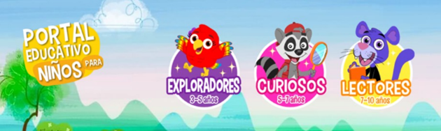

RED Árbol ABC
Árbol ABC es un recurso educativo digital diseñado para apoyar el aprendizaje de fracciones equivalentes y operaciones de suma y resta de fracciones homogéneas en estudiantes de cuarto grado de primaria.
Características: Este recurso, accesible tanto en línea como fuera de línea, ofrece una interfaz intuitiva y amigable, actividades multimedia interactivas y materiales imprimibles, facilitando así la comprensión de conceptos matemáticos de manera efectiva y lúdica.
Limitaciones: Presenta limitaciones como la dependencia de una conexión a internet estable y la incapacidad de guardar el progreso en caso de fallos técnicos.
Se recomienda mejorar la capacidad de guardar el progreso de las actividades para optimizar la experiencia de los usuarios.

RED Colombia Aprende
Colombia Aprende es un recurso educativo digital diseñado para apoyar el aprendizaje de matemáticas en estudiantes de cuarto grado de primaria, accesible en Colombia Aprende.
Características: Este recurso ofrece contenidos interactivos y actividades imprimibles que facilitan la comprensión de conceptos matemáticos de manera efectiva y atractiva. Es caracterizado por su accesibilidad y facilidad de uso, permitiendo la interacción tanto en línea como fuera de línea.
Limitaciones: Depende de una conexión a internet estable y puede experimentar fallos técnicos sin guardar el progreso de las actividades.
Justificación: Su implementación en el aula promueve un aprendizaje activo y participativo, adaptándose a las necesidades específicas de los estudiantes y enriqueciendo la educación matemática a pesar de sus limitaciones.